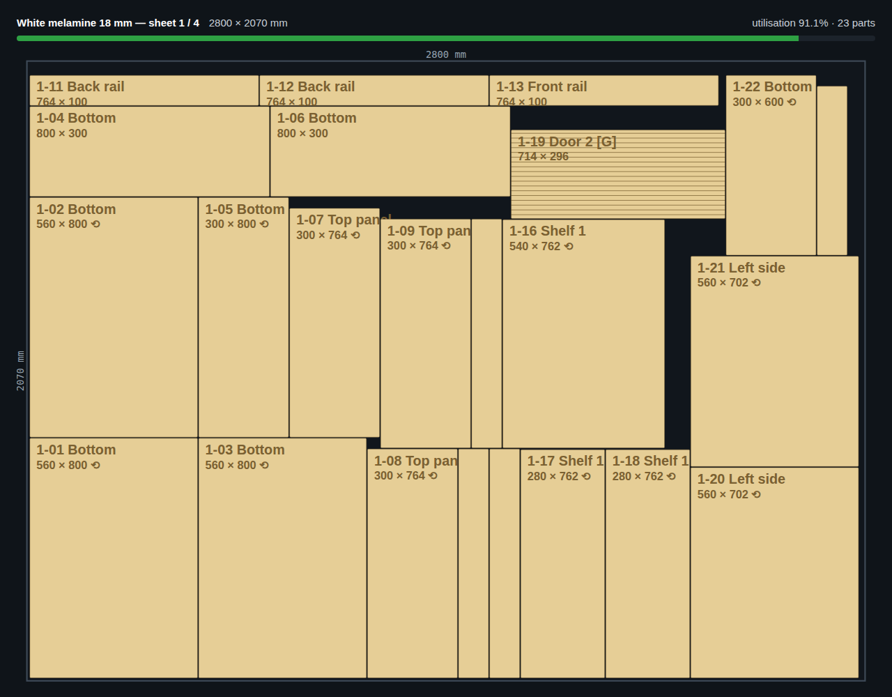
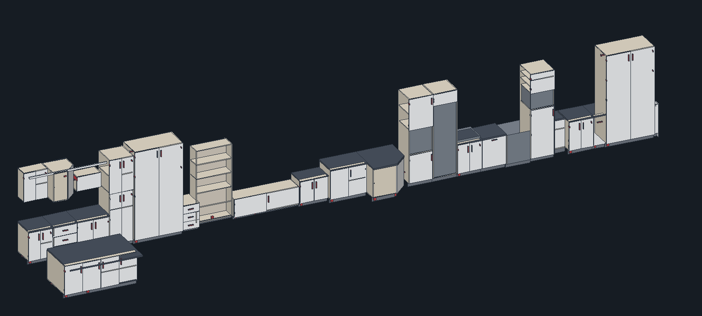
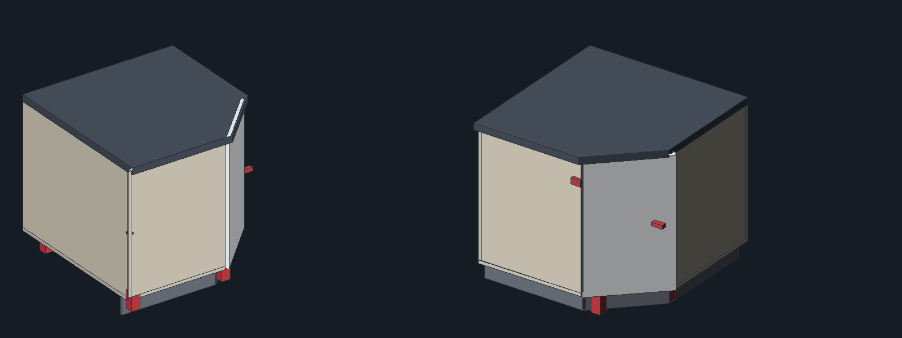
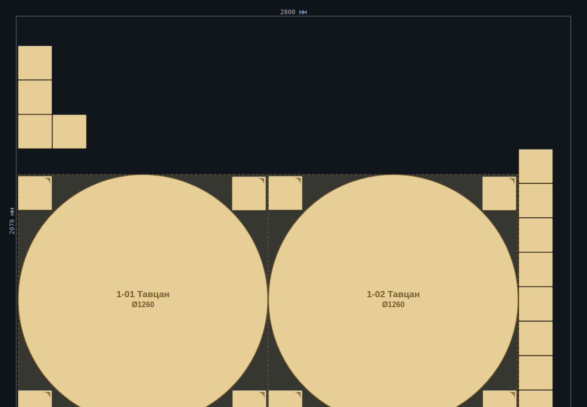
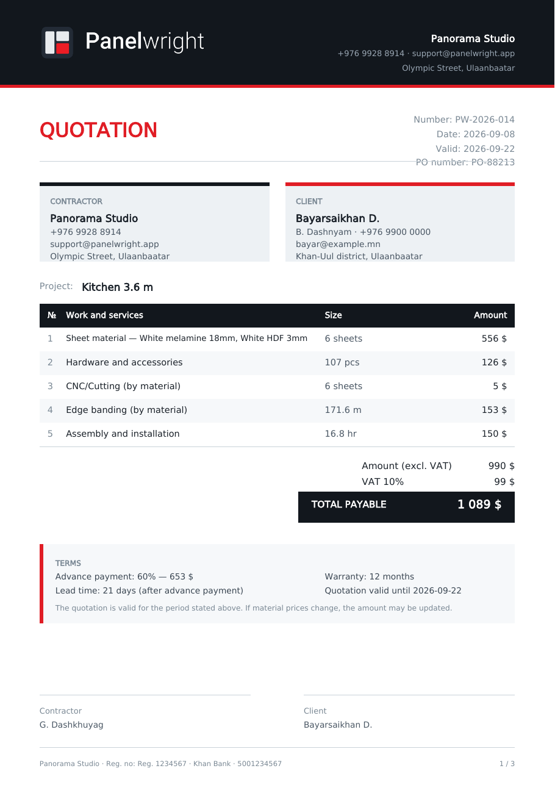
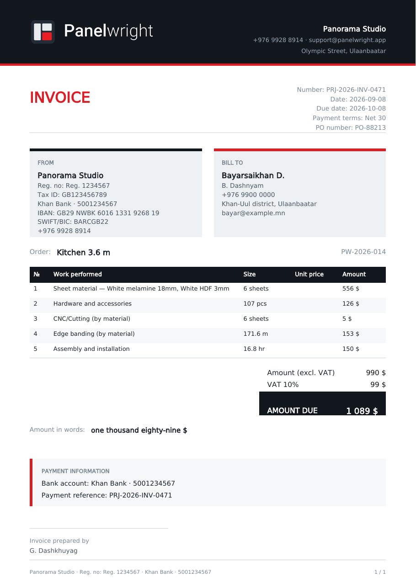
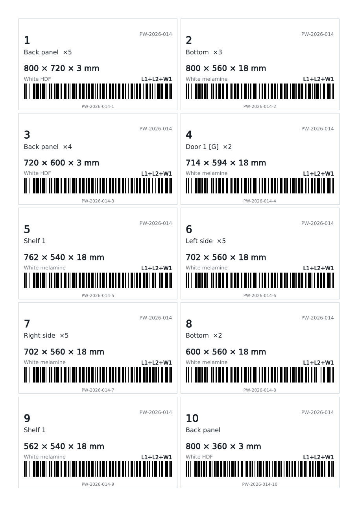
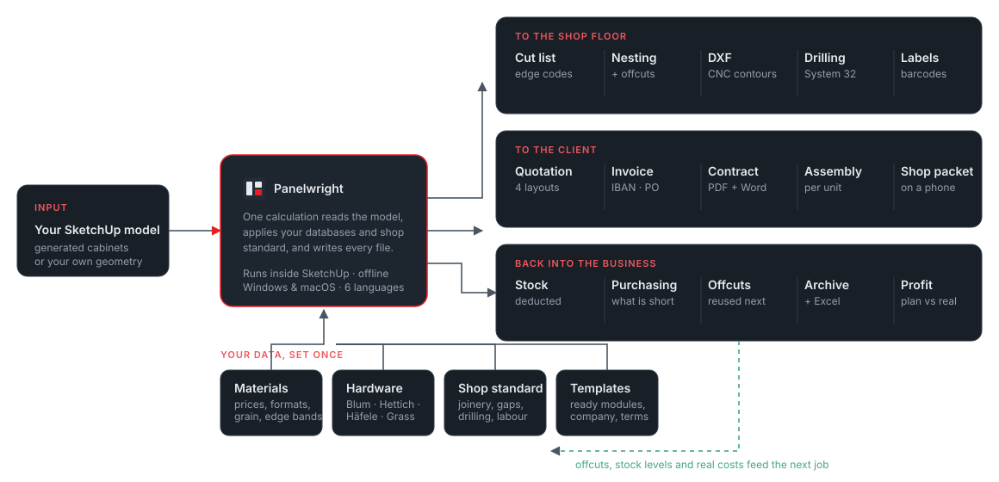

Гал тогоогоо зур. Нэг товч дар. Хавтан, машины файл, тоноглолын захиалга, захиалагчийн нэхэмжлэх бүгд гарна.

3.6 м гал тогоо үнийн саналтай болтол ойролцоогоор хоёр минут.
Дугуй деталь дугуй байна. Цоколь хөлд саадгүй. Шургуулга худалдаж авч болох дамжлагад таарна.
Задаргаанаас нэхэмжлэх хүртэл арван дөрвөн баримт.
Бүртгэл, сервер, үүл шаардахгүй. Таны үнэ таны компьютерт л үлдэнэ.
Чимэглэлийн хайрцаг биш. Энд байгаа дүрэм болгон нь өмнө нь алдаа гарсан ажлаас үүссэн.

45° булан бол хоёр хавтан ба найдвар биш, хаалттай хайрцаг. Panelwright хоёр буцах хажуу, митрээр зүссэн таван өнцөгт ширээний тавцан, гурван хэсэгтэй цоколь, таван хөлийг бүтээнэ — налуу хаалгыг биеийн гадна өлгөдөг тул саадгүй.
Сохор Г булан ч ижил арга барилаар бүтэх бөгөөд гараа дамжуулах шаардлагатай үхсэн зайг ч тооцно.

Ихэнх задаргаа зөвхөн хүрээлэгч дөрвөлжинг хардаг. Panelwright бодит контурыг хадгалдаг — энэ нь роутер юу зүсэх, захиалагчид хэдийг нэхэмжлэхийг өөрчилдөг.
Ø1260 ширээний тавцан 3.96 м ирмэгтэй. Хүрээлэгч дөрвөлжин 5.04 м гэж тооцно. Таны үнэлж байсан дугуй деталь болгон энэ зөрүүг үүрч байсан.
Nesting харагдац нь жинхэнэ тойргийг зурна, DXF контурыг өөрийн давхаргад, заготовкыг BLANK давхаргад экспортолно, цех роутероор зүсдэг үед жижиг деталь заготовкийн булан руу багтана.

Контур PANEL давхаргад, заготовк BLANK давхаргад. Дахин зураагүйгээр роутерт бэлэн.
35 мм аяга, 45/9.5 схем, 32 мм алхамтай Ø5 тавиурын тулгуур, конфирмат, Minifix эсвэл шаантаг — таны сонгосон холболтыг дагана.
Деталь бүрт нэг, зүсэх хэмжээ, материал, ирмэгийн кодтой. Ирмэг хуулах машин дээр сканнердана.
Хавтангаас том деталь, стандарт бус дамжлагын урт, нугасандаа хэт өргөн хаалга — хэн ч зүсэхээс өмнө баригдана.
Бүгд нэг тооцооноос гарах бөгөөд таны компанийн толгой, нөхцөл, захиалагчийн мэдээлэл аль хэдийн бөглөгдсөн байна.



Үнийн санал, хэмжилтийн хуудастай зураг төслийн санал, нэхэмжлэх, PDF болон засварлах боломжтой Word хэлбэрийн гэрээ, хавсралт нь аль хэдийн орсон и-мэйл ноорог.
Задаргаа, 3D харагдацтай угсралтын хуудас, интернэтгүй утсан дээр нээгддэг цехийн багц, нэгж бүрийн тоноглолын уут ба савлалтын жагсаалт.
Хавтан ба деталь тус бүрийн DXF, PDF ба DXF өрөмдлөг, бодит томьёотой Excel, штрих кодтой шошго.
Худалдан авалтын захиалга, бүх ажлыг хамарсан нэг MASTER Excel, төлөвлөсөн ба бодит ашгийн харьцуулалт, хувилбарын харьцуулалт, бүрэн нөөцлөлт.
Ихэнх plugin хүснэгт өгөөд зогсдог. Panelwright ажлыг эцэс хүртэл нь авч явдаг бөгөөд сурсан зүйлээ дараагийн ажилд буцааж тусгадаг.

Бүх зүйл таны өөрийн компьютерийн фолдерт бичигдэнэ. Бүртгэл, синк, аналитик байхгүй. Сүлжээний ганц дуудлага нь шинэчлэл шалгалт, лиценз идэвхжүүлэлт, мөн таны өөрийн илгээхээр сонгосон оношилгоо.
Үнэ, тоноглол, компани ба захиалагчийн мэдээлэл, төслийн архив, үлдэгдлийн агуулах нэг нөөцөнд багтана. Тэглэх, сэргээхийн өмнө автоматаар нөөцлөнө. Шинэ компьютер рүү нэг минутад шилжинэ.
Хэд хэдэн дизайнерыг сүлжээний диск эсвэл локал серверийн нэг фолдер руу чиглүүлнэ. Үнэ ба нийлүүлэгчийн сан, төслийн архив, үлдэгдэл, нөөц бүгд тэнд байна. Файл түгжих, атом бичилт нь хоёр хүн нэгэн зэрэг хадгалахад бие биеийнхээ ажлыг алдахгүй байлгана.
| Үнэгүй задаргааны plugin | Desktop CAM / ERP багц | Panelwright | |
|---|---|---|---|
| SketchUp-ийн ямар ч геометрээс задаргаа | Тийм | Зөвхөн импорт | Тийм |
| Параметртэй шүүгээний сан | Үгүй | Тийм | Тийм |
| Үлдэгдлийн агуулахтай nesting | Энгийн | Тийм | Тийм |
| Өрөмдлөгийн өгөгдөлтэй тоноглолын каталог | Үгүй | Тийм | Тийм |
| Материал ба үнийн сан, ажлын хөлсний тариф | Үгүй | Тийм | Тийм |
| Нөөцийн хяналт ба худалдан авалтын захиалга | Үгүй | Тийм | Тийм |
| Үнийн санал, нэхэмжлэх, гэрээ | Үгүй | Ховор | Тийм |
| Төслийн архив ба ашгийн хяналт | Үгүй | Тийм | Тийм |
| SketchUp дотор, офлайн, сервергүй ажиллана | Тийм | Үгүй | Тийм |
| Анхны ажил хүртэлх тохиргооны хугацаа | Минутууд | Долоо хоногууд + сургалт | Нэг үдэш |
| Үнэ | Үнэгүй | Суудал бүрт мянга мянган доллар | Сард $24-аас |
Panelwright нь нэгээс хорин хүртэл хүний цехэд зориулагдсан. Энэ нь үйлдвэрийн MRP биш: машины хуваарь, нягтлан бодох бүртгэлийн холбоо, олон салбарын сервер байхгүй. Харин хамарсан зүйлээ эцэс хүртэл нь хамарна.
Задаргаа, nesting, баримт, шошгонд фракц инч (28 3/8"). Letter эсвэл A4. Модель, эсвэл та өөрөө шийднэ.
English, Español, Türkçe, Русский, 中文, Монгол — интерфейс, баримт, шошго бүгд. Орчуулгын файлыг экспортолж өөрийнхөө хэлийг нэмж болно.
Зурагтай PDF гарын авлага, таны тооцоог уншиж засвар санал болгодог туслах, нэг товшилтоор илгээх оношилгооны тайлан.
Улаанбаатар дахь Panorama Studio бүтээсэн. Нэг хүн хөгжүүлдэг тул алдаа хурдан засагдаж, цаашдын төлөвлөгөө бодит цехүүдээс гардаг.
Төлөвлөгөө бүр бүх боломжийг нээнэ — модуль, шүүгээний хязгаар, усан тэмдэг байхгүй.
Зураг төсөл, үйлдвэрлэлийн файл, өөрийн сан, худалдан авалт ба нөөц, захиалагчийн баримт, төслийн архив, ажил бүрийн ашгийг нэг тооцооноос хамарна. Энэ нь үйлдвэрийн MRP биш: машины хуваарь, нягтлан бодох бүртгэлийн холбоо, олон салбарын сервер байхгүй. Нэгээс хорин хүртэл хүний цехэд эцэс хүртэл нь хүрнэ.
Ажиллана. Ямар ч групп эсвэл компонентийг деталь гэж уншина. Panelwright зузаан, хэмжээ, материал, ил ирмэгийг геометрээс нь шууд авдаг тул гараар зурсан модель генераторын бүтээсэнтэй адилхан ажиллана.
SketchUp 2021 ба түүнээс шинэ, Windows болон macOS дээр. SketchUp дотор ажилладаг тул өөр юу ч суулгах шаардлагагүй.
Болно. Бүгдийг нэг дундын фолдер руу чиглүүлбэл үнэ ба нийлүүлэгчийн сан, төслийн архив, үлдэгдэл, нөөц нэг дундын багц болно — хавтангийн үнийг нэг удаа өөрчлөхөд бүгд түүгээр үнэлнэ.
Файл түгжих, атом бичилт нь хоёр хүн нэгэн зэрэг хадгалахад бие биеийнхээ ажлыг алдахаас сэргийлнэ. Таны цонх нээлттэй байх хооронд өөр хүн үнийн санг засвал Panelwright танд мэдэгдэж, дарж бичихээсээ өмнө асууна — чимээгүй дарж бичихгүй.
Жинхэнэ сүлжээний дундын диск эсвэл локал сервер хэрэглэнэ. Үүлэн синкийн фолдер (Dropbox, Google Drive, OneDrive) файл түгжиж чаддаггүй, өөрийн зөрчилтэй хуулбарыг үүсгэдэг. Компанийн мэдээлэл, баримтын загвар компьютер бүрт тусдаа үлдэнэ.
Таны төсөл, үнэ, тохиргоо өөрийн компьютер дээрх файл тул тэнд үлдэнэ. Түлхүүр нь зөвхөн програмыг дахин нээдэг. Компьютер солих нь нэг нөөц файл.
Тийм, нэг анхаарах зүйлтэйгээр. Nesting нь зүсвэр, зай, судал, үлдэгдлийг дахин ашиглахыг тооцдог MaxRects бөгөөд дугуй, хэлбэртэй деталь DXF дотор жинхэнэ контураа хадгална. Жижиг деталийг дугуй заготовкийн булан руу байрлуулдаг — роутер дээр хэрэгтэй, харин хавтан зүсэгч дээр тохирохгүй тул тохиргоо болон анхааруулга байдаг.
Болно. Каталогт Blum, Hettich, Häfele, Grass, Salice-ийн бодит загвар, хэмжээс, өрөмдлөгийн схем орсон бөгөөд өөрийнхөө тоноглолыг хажууд нь нэмж болно.
Бүгд, арван хоногийн турш. Карт, усан тэмдэг, шүүгээ эсвэл экспортын хязгаар байхгүй. Дууссаны дараа таны төсөл, тохиргоо үлдэх бөгөөд түлхүүр дахин нээнэ.
Суулгаад, нэг ажил загварчлаад, Тооцоолох дарна уу. Хэрэв нэг үдшийг хэмнэхгүй бол та юу ч алдаагүй.